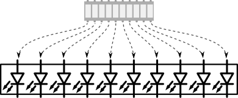
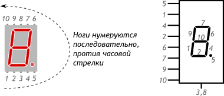
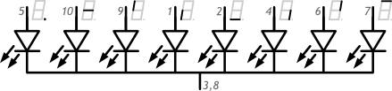
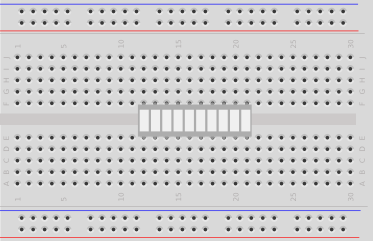
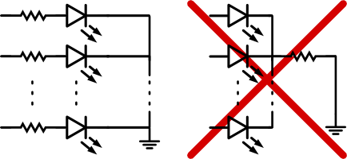

Многие компоненты, используемые для индикации, представляют собой несколько отдельных светодиодов в одном корпусе.
Светодиодная шкала — это десяток отдельных светодиодов, каждый со своим анодом и катодом.

Семисегментный индикатор — это восемь светодиодов в одном корпусе: 7 сегментов + точка. Анод у каждого светодиода отдельный, а катод у всех общий, на ноге 3 или 8.


Для подключения на breadboard’е используйте канавку в центре, чтобы не замкнуть ноги на противоположных сторонах.

Используйте отдельный резистор для каждого светодиода, иначе при разном количестве включенных сегментов их яркость будет «скакать».
Даже в случае, когда все светодиоды включаются и выключаются синхронно, лучше придерживаться этого правила. Светодиоды могут чуть отличаться своей вольт-амперной характеристикой друг от друга. Первый открывшийся пропустит через себя ток, предназначенный для всех. Из-за чего он может выйти из строя и «эстафета» перейдёт к следующему.
